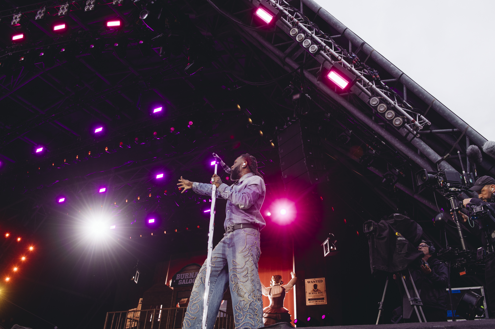
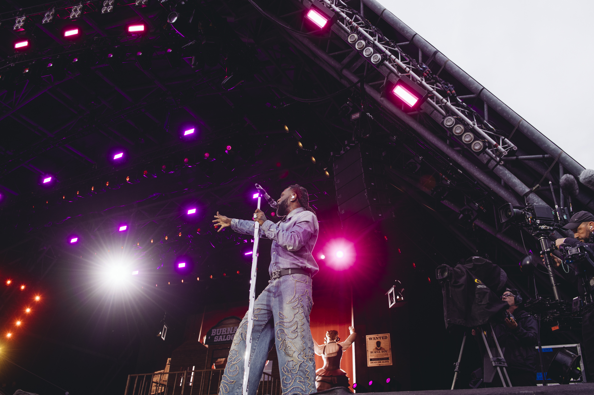

Read Burnaboy's Biography
Damini Ebunoluwa Ogulu (a.k.a Burna Boy) is a Nigerian Afrobeats artist known for his unique fusion of Afrobeat, reggae, and dancehall. His Grammy-winning album "Twice as Tall" elevated him to global prominence.
Music Player
YouTube Video
Discography
| Year | Album |
|---|---|
| 2013 | L.I.F.E |
| 2019 | African Giant |
| 2020 | Twice as Tall |